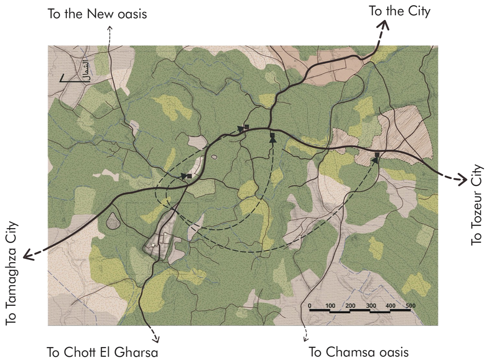
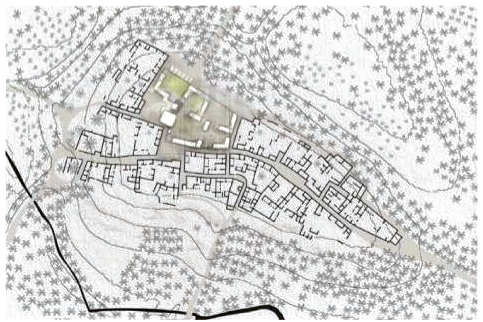
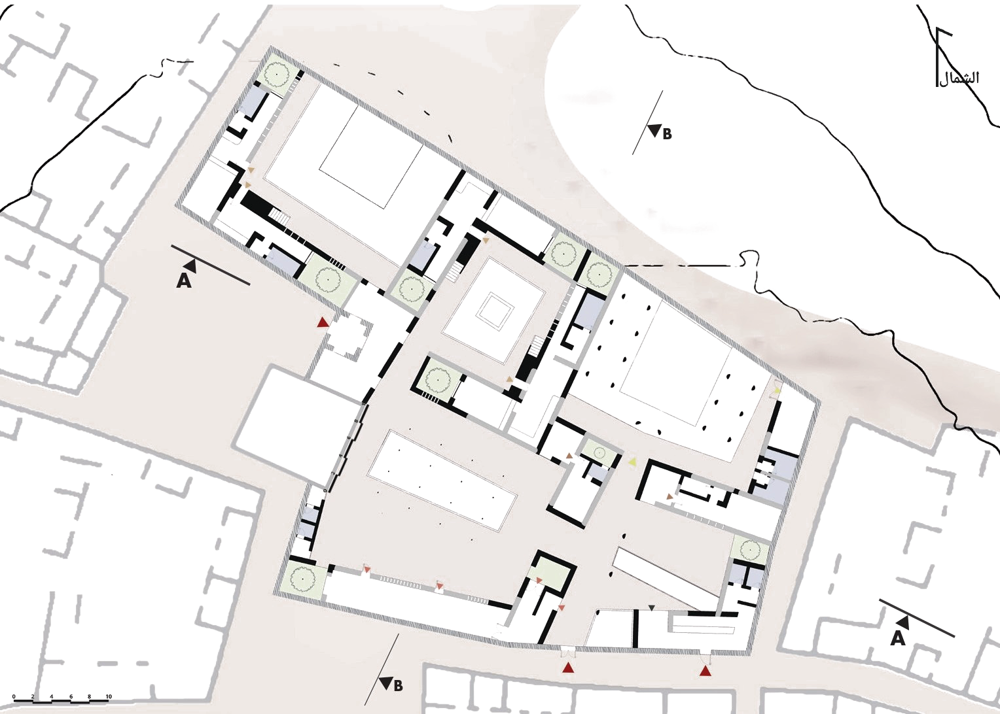
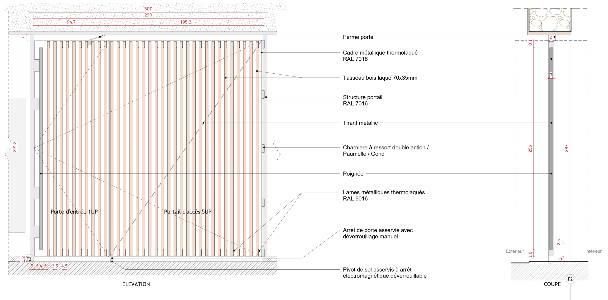
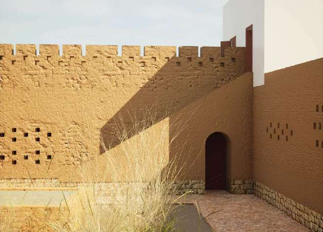

Territorial. Site map | Al-Arg within the Jérid. Reading of the oasis territory as a system | water, road, inhabited fabric.
A village in the Tunisian Jérid region | raw earth architecture never previously documented. Multiple on-site survey campaigns conducted: measurements, documentary photography, interviews with former inhabitants.
The ruined village that founded the conviction.
The thesis operates at three scales simultaneously: a territorial analysis of the conditions that produced the abandonment, an urban proposal for the reactivation of the village as a place of memory, culture, and temporary dwelling, and an architectural intervention on a key building within the fabric.

Territorial. Site map | Al-Arg within the Jérid. Reading of the oasis territory as a system | water, road, inhabited fabric.

Urban. Site plan | rehabilitation proposal.

Architectural. Ground floor plan | proposed




بين شاعرية المكان و قيمة الأثر